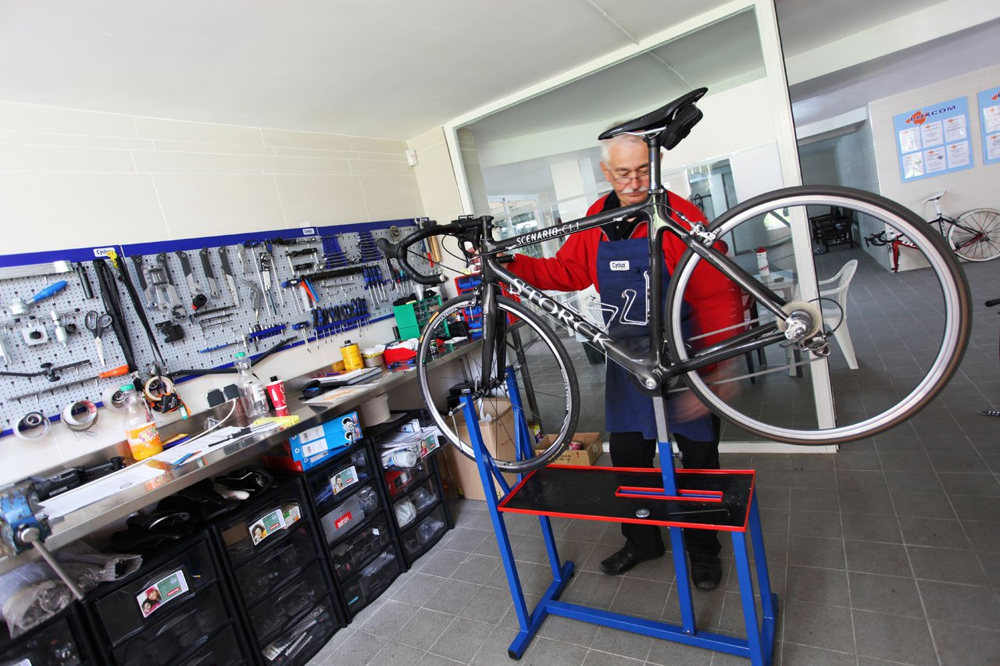

Somos una de las bicicleterías más grandes de la provincia de Buenos Aires,
contamos con 26 años de trayectoria
Estamos ubicados en la localidad de Veinticinco de Mayo, en el centro de la provincia
Aquí un mapa para ubicarnos:
Estamos situados en una ciudad clásica, en el centro de la provincia. Veinticinco de Mayo conserva el gusto de un pueblo típico de provincia, con gente amable que está dispuesta siempre a dar una mano. Nuestra clientela siempre acude a nosotros cuando tiene reparaciones, ganas de comprar accesorios para las bicicletas ¡acérquese si busca confianza y una buena charla típica de pueblo! nuestros clientes nos recomiendan. Estamos en la calle 8, número 1344, a dos cuadras del centro de la ciudad.
¿A qué nos dedicamos?

Somos especialistas en reparaciones en general de bicicletas, motos y monopatines, además de vender amplia variedad de rodados nuevos y usados. Tenemos pelotas de fútbol, básquet, tenis, voley, redes de fútbol y voley, además de hacer reparaciones de las mismas. Nos caracteriza la cercanía y confianza con el cliente del día a día, y la tranquilidad de encontrarnos en una ciudad muy tranquila, donde podemos darnos la oportunidad de, incluso hablar de la vida con el cliente.
¿De qué trata el ciclismo? te dejamos un video. ¡No pierdas la oportunidad de hacer ejercicio!
El ciclismo es un deporte practicado con bicicletas y que en casi todas las ocasiones tiene como objetivo recorrer un determinado recorrido en el mínimo de tiempo posible, siendo así el más rápido a completarlo si quiere vencer la prueba.
Actualmente el ciclismo también es bastante recreativo o incluso una forma de desplazarse para el trabajo, la escuela, etc, y eso todo gracias a los avances que se han hecho en el mundo de las bicicletas y su alta popularidad.
La bicicleta esta directamente relacionada con el ciclismo, las primeros antecedentes de este vehículo se encuentran en las civilizaciones de China, Egipto e India. En 1790, fue presentado en la corte Versalles un aparato similar a la bicicleta que hoy en día conocemos. Este aparato fue denominado Celerífero, estaba conformado por una barra de un metro de largos unida por dos ruedas, se desplazaba gracias al impulso de los pies en el suelo. Luego en 1839 se creo el velocípedo, fue la primera bicicleta de pedal, la cual fue diseñada por un escocés Kirkpatrick Macmillan.
El ciclismo como deporte nace a mediados del año 1890, aunque fue en Italia en el año 1870 que se realizo la primera carrera de ciclismo en carretera. Pero fue a partir del año 1900 que se establecen muchas de las categorías del ciclismo.